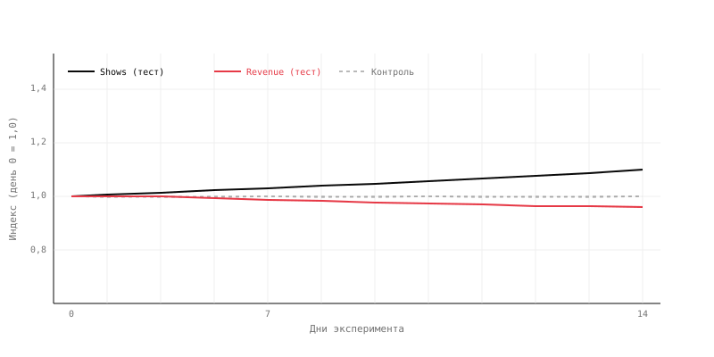
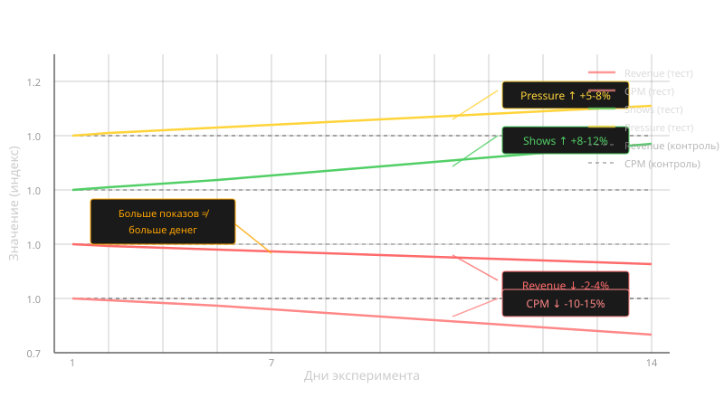

Больше показов — меньше денег
14 дней эксперимента. В тестовой группе показы выросли на 10%, но выручка упала на 4%. Нужно понять, почему рост объёма дал отрицательную отдачу.
Команда добавила новые рекламные размещения в тестовой группе: расширила инвентарь за счёт дополнительных позиций для рекламы в контенте. Цель — рост выручки за счёт увеличения объёма показов.
Эксперимент длился 14 дней. Трафик стабилен, сезонных эффектов нет. Контрольная группа без изменений.
По итогу: показы в тестовой группе выросли на 10%, CPM снизился на 13%, выручка упала на 4%.

- Если показов стало больше, а выручки меньше — какая третья переменная связывает их и в какую сторону она должна была измениться?
- В какой момент эксперимента эффект становится виден и почему он не проявляется с первого дня?
- Какие метрики нужно проверить, чтобы отличить «новые показы дешевле старых» от «старые показы стали дешевле»?
Показать разбор
На графике видно: показы в тесте растут с первых дней, выручка начинает снижаться примерно с третьего дня и к концу эксперимента устойчиво ниже контроля. Чтобы объяснить парадокс, нужна третья метрика — CPM.

Почему так бывает. Выручка — это CPM × объём показов. Если объём вырос на 10%, а выручка упала на 4%, значит CPM упал сильнее, чем вырос объём. Так и есть: CPM в тесте снизился на 13%. Новые рекламные размещения привлекли низкоценный спрос — они менее заметны, в худшем контексте, ниже в иерархии инвентаря. Цена показа в среднем по тесту опустилась, и рост объёма не смог это компенсировать.
Где глаз обманывается. Рост показов выглядит как успех — больше рекламы, больше трафика, больше монетизации. Но если новый инвентарь отличается по качеству от существующего, он не складывается со старым, а разбавляет его. Аналитик должен смотреть не на объём в отрыве, а на произведение — Revenue = CPM × Shows.
Что проверить.
- Mix shift по размещениям — какая доля показов пришла из новых позиций, какой у них CPM, как он сравнивается со старыми.
- CPM по сегментам инвентаря — упал ли CPM на старых размещениях (каннибализация спроса) или новые просто дешёвые сами по себе.
- Viewability и CTR новых размещений — качество показов: видны ли они вообще, кликают ли по ним.
- Guardrails по пользовательскому опыту — время в контенте, глубина сессии, ad fatigue. Расширение инвентаря может ухудшать долгосрочную монетизацию через пользовательское поведение.
Неверный вывод: «Показы выросли на 10% — значит расширение инвентаря работает. Выручка упала из-за внешних факторов или подтянется позже. Катим в прод.»
Верный вывод: Расширение инвентаря подняло объём показов, но новые размещения оказались дешевле старых — CPM упал на 13%, и падение цены превысило выигрыш по объёму. Чистый эффект на выручку — −4%. В прод не катить: новый инвентарь разбавляет качественный, а не дополняет его. Нужно либо убрать новые размещения, либо повышать их ценность для рекламодателей.
Чего нельзя утверждать: «Расширение инвентаря всегда плохо» — зависит от качества новых размещений. «Эффект проявится позже» — 14 дней достаточно для оценки расширения инвентаря. «Старый инвентарь не пострадал» — без проверки CPM по сегментам это предположение, а не вывод.
Механика, которая объясняет этот сценарий, разобрана в уроке 01. Цена и объём.